Can one demonstration
teach a robot to recover?
Task 1-a showed that a learned motion generator could reach a target. This follow-up asked more: when the robot starts away from the demonstrated posture, can its first commands adapt to that state and then guide it back toward the target?
The proposed recovery advantage was not established. Some models completed every development check for safety and target dwell, but none improved the early commands consistently enough to qualify. The experiment closed with an accepted negative result: no model was frozen, and no confirmatory evaluation was run.
Experiment task_1a_recovery_v1 · Overview written 7 September 2026 ·
Detailed report · Recorded decision
Reaching successfully is only the first question
The project studies reservoir computing (RC) as an inexpensive way to learn robot motions. An echo state network (ESN) has a fixed recurrent network that remembers recent inputs; training fits only a linear output layer using ridge regression. Here, that output supplies desired joint positions to a conventional torque controller. All weights stay fixed during execution.
In the original task 1-a experiment, RC reached and held the target in all 65 confirmatory scenarios under each of two trackers. Direct replay of the demonstration was nevertheless more precise without external force. There was also a timing asymmetry: during the initial hold, RC held the perturbed posture while replay already tried to return to the recorded starting posture. Their reaching motions therefore began after different opportunities to correct the initial error.
Make the comparison fair
Give RC and replay the same pre-task hold, at the same perturbed posture, then activate both together. Replay should not receive an extra recovery interval before the measured task begins.
Test a stronger hypothesis
Train on smooth variations around the demonstration that narrow toward the target. The intended behavior is to start with a command near the robot’s actual posture, then converge, instead of abruptly requesting the recorded path.
This is a separate experiment with a different question and timing protocol. Its development counts are not directly comparable to the earlier confirmatory success rate. Source: recovery protocol, §§1–2.
Change the starting conditions, keep the target
The simulation uses a gravity-free planar arm with two joints and links of 0.30 m and 0.25 m. The endpoint must reach (0.10, 0.45) m and hold within a 1 cm tolerance. The task runs at 100 Hz. Its only independent training source is the same scripted minimum-jerk demonstration used in task 1-a; synthetic copies do not count as new demonstrations.
Separate recording, warm-up, and reaching
The original recording includes a one-second stationary pre-roll. Preprocessing uses it as filter context, then removes it from the training trajectory. The retained episode contains a three-second reach and a one-second dwell: 401 samples. Each training episode and evaluation run resets the reservoir independently.
Schematic timing, not to scale. Warm-up candidates: 0, 0.25, 0.5, 1, and 2 s. The examples below use Tw = 0.25 s; their plots show run time, so activation is at 0.25 s.
At training time, the network sees the demonstrated or augmented state and predicts the next joint position. At execution time, it receives measured robot position and velocity, not its previous desired command. A PD tracker corrects position and velocity errors; the secondary computed-torque tracker additionally uses the robot dynamics and desired acceleration. Both trackers were frozen before this comparison.
Teach a narrowing family of paths
Augmentation adds correlated, seeded joint-position perturbations to the demonstration. The AR(1) process makes neighboring perturbations correlated in time; its coefficient φ controls that persistence (the search used 0.98, 0.99, and 0.995). Velocities are then recomputed from the perturbed positions, and invalid episodes are rejected. In the contractive family, the perturbation shrinks with the demonstrated endpoint’s distance to the target. The comparison family keeps that envelope uncontracted through most of the reach. Both use the same smooth terminal taper and match the original before dwell.
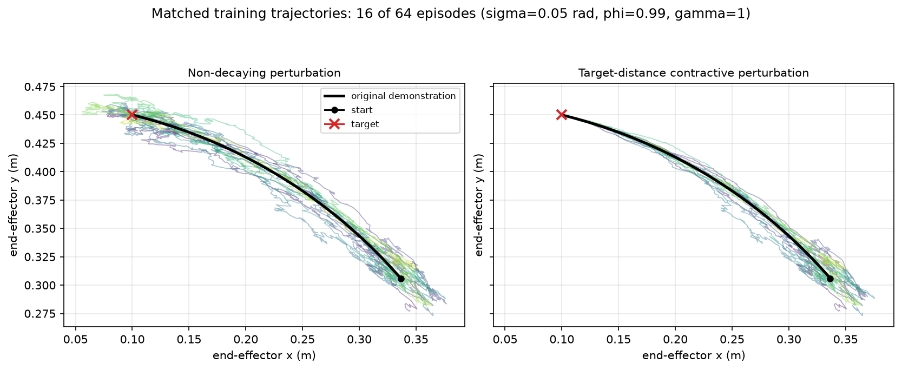
How the augmentation scale and contraction strength change the paths
σ controls the per-joint perturbation scale. γ controls how quickly the target-distance envelope narrows; a larger γ suppresses deviations earlier as the reference approaches the target.
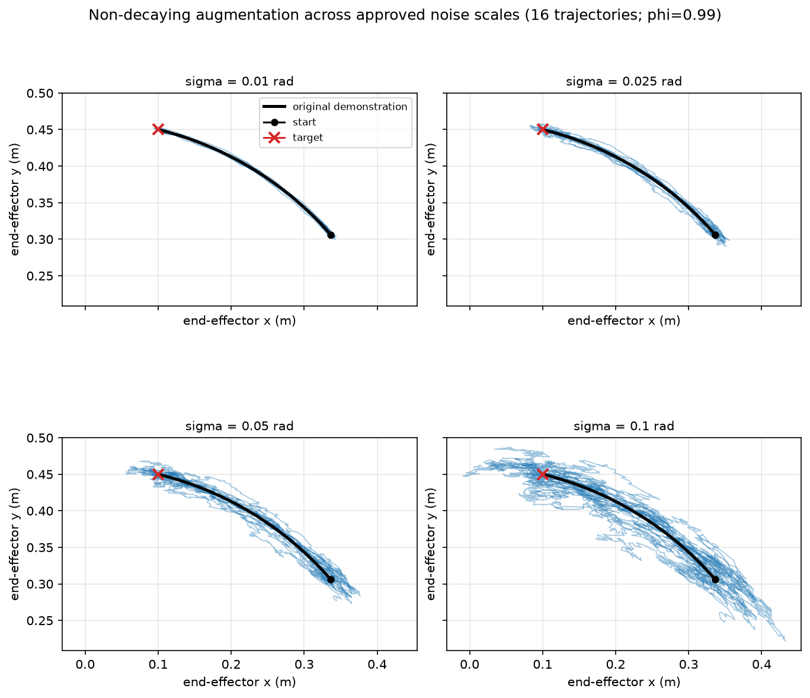
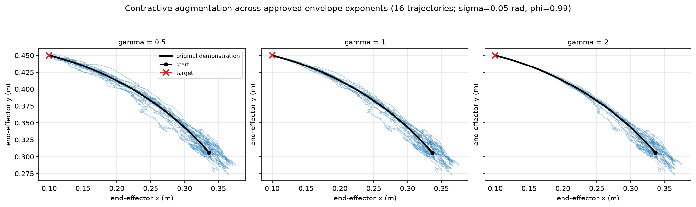
| Formulation | Training data | Purpose |
|---|---|---|
| Timing only | Original episode only | Test the new timing without augmentation |
| Non-decaying augmentation | Original + 16, 32, or 64 synthetic episodes | Test added variation without distance-based contraction |
| Contractive augmentation | Original + 16, 32, or 64 synthetic episodes | Test the proposed recovery mechanism |
| Residual output · exploratory | Contractive data | Predict a position increment added to measured position |
What would count as recovery?
Every feasible trial must complete the development suite under both trackers: 65 scenarios × 2 trackers = 130 RC evaluations, each compared with its matched replay baseline. The scenarios are 1 nominal, 20 small-posture offsets (0.05 rad norm), 20 large offsets (0.10 rad), 4 force directions (12 N for 0.2 s), and 20 combinations of a small offset and force. The force acts at task time 1–1.2 s. Trials stop at their first infeasible evaluation, so 2,000 trials does not mean 2,000 complete suites.
First: feasible motion. Complete without state or safety-limit violations, with torque saturation at or below 0.5%. Actual motion and the generated reference must each spend at least 90% of dwell within 1 cm, with each dwell joint speed at or below 0.05 rad/s. Torque limits remain 10 and 5 N·m.
Then: consistent improvement. In each of four comparisons (small/large posture × PD/computed torque), both median command ratios must be below 1, and at least 15 of 20 scenarios must improve both measures together. Passing one comparison cannot compensate for failing another.
| Measure | Plain-language meaning | Role |
|---|---|---|
| Activation jump · rad | Distance between the first desired joint position and the actual starting position | Is the first request closer to the robot? |
| Early command gap · rad·s | Integral of ‖desired − actual joint position‖ over the first 0.5 s | Does the command stay closer during the initial response? |
| Movement RMSE · rad | Actual motion’s time-aligned deviation from the original demonstration | Diagnostic only; a different safe path is allowed |
A paired ratio is RC’s value divided by replay’s value for the same scenario and tracker: 1 means equal, and 0.7 means 30% smaller. A small command gap alone is insufficient: a generator could simply follow the robot’s current position without ever guiding it to the target. This is why target dwell is a separate mandatory check.
Sources: protocol §§4–7 and approved decisions D1–D6; development scenario configuration.
Feasible motion, but no qualifying recovery model
| Formulation | Trials | Feasible | Outcome |
|---|---|---|---|
| Timing only | 500 | 134 | 26.8% feasible; none eligible |
| Non-decaying augmentation | 500 | 0 | No feasible model found in sampled trials |
| Contractive augmentation | 500 | 0 | No feasible model found in sampled trials |
| Residual output · exploratory | 500 | 0 | No feasible model; outside the primary freeze comparison |
Why a promising median was not enough
The best feasible timing-only trial by the early-gap objective was trial 17, with 100 reservoir neurons and 0.25 s warm-up. Its worst of the four cell-median gap ratios was 0.6704: roughly 33% lower than replay even in that comparison. Nevertheless, its small-posture improvement was too inconsistent.
| Trial 17 comparison | Median gap ratio < 1 required | Median jump ratio < 1 required | Both improve ≥ 15 / 20 required | Cell result |
|---|---|---|---|---|
| Small posture · PD | 0.6704 | 0.9059 | 11 / 20 | Fail |
| Small posture · computed torque | 0.3123 | 0.9059 | 11 / 20 | Fail |
| Large posture · PD | 0.5288 | 0.7330 | 15 / 20 | Pass |
| Large posture · computed torque | 0.2335 | 0.7330 | 15 / 20 | Pass |
This was not just a failure of trial 17. Across all 134 feasible trials, the highest small-posture PD count was 14 of 20. Thus every feasible trial failed at least that comparison. None advanced to the reservoir-seed stability panel, model freeze, or confirmatory suite. Trial 17 is used below only as a development example.
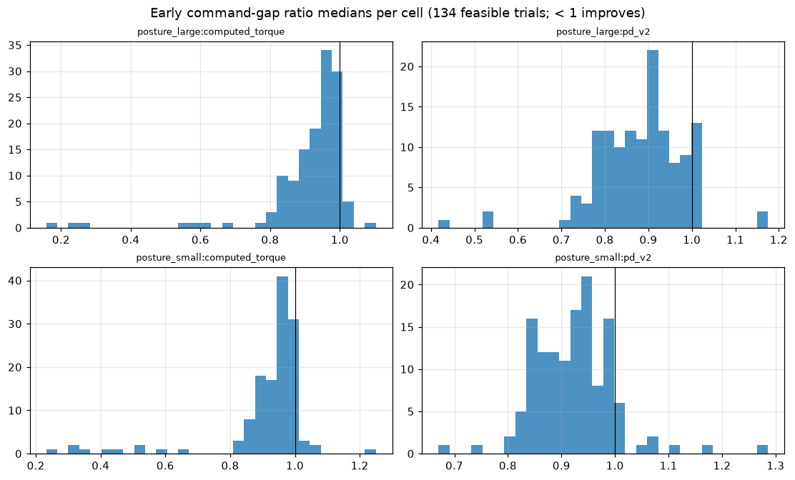
Activation jumps and warm-up: two additional views
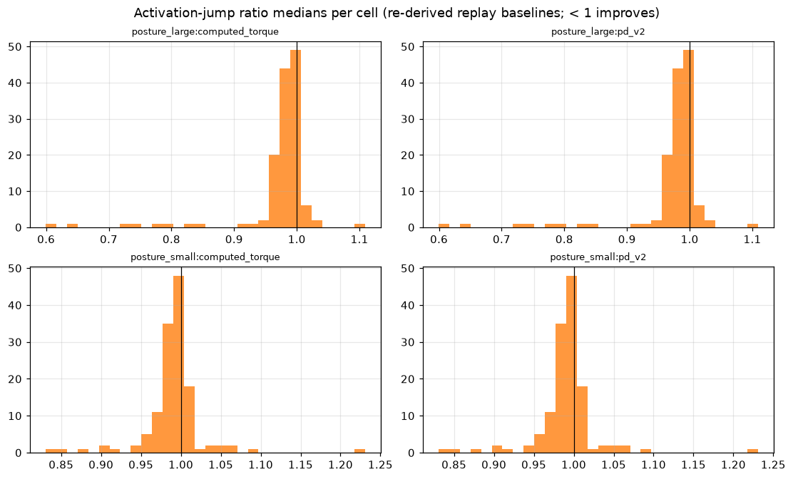
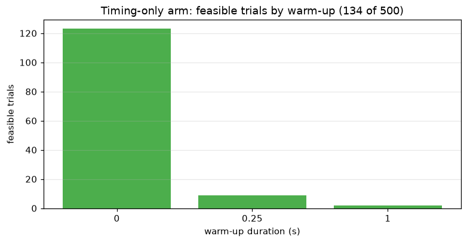
Where did the unsuccessful trials fail?
Most first failures were failure to settle and remain still at the target, or a joint-velocity limit violation. The residual formulation was especially dominated by velocity-limit failures.
| First failing check | Timing only | Non-decaying | Contractive | Residual |
|---|---|---|---|---|
| Actual-motion dwell | 200 | 229 | 272 | 2 |
| Joint-velocity limit | 148 | 258 | 221 | 494 |
| Early termination | 0 | 13 | 4 | 4 |
| Generated-reference dwell | 18 | 0 | 3 | 0 |
See the behavior behind the numbers
All four examples use timing-only trial 17 with the same PD v2 tracker for RC and replay. Both arms hold their own initial posture for 0.25 s and activate at task time zero. The small- and large-posture examples are chosen nearest their class-median early-gap ratio under PD; nominal and the first force scenario by ID complete the set. These are curated examples of a feasible development model, not evidence of a selected model or confirmatory success.
How to read the visuals. Animations play back recorded actual joint positions; they do not show the desired commands or rerun the controller. The target ring is the 1 cm tolerance; a red arrow indicates applied force. In the joint plots, black dashed = teacher/reference, blue = replay actual, green dashed = RC generated reference, orange = RC actual. During warm-up the RC readout is inactive, so its generated-reference curve is absent.
Motion is off until requested. “Stop motion” removes the GIFs. Paired GIFs are independent playbacks, not frame-synchronized; use the time-series plots for precise timing. Click any plot to open its full-resolution image.
Large posture offset · an altered path can still reach the target
Initial joint offset: [+0.0415, −0.0910] rad, norm 0.10 rad; no force. RC’s generated reference enters and remains within 0.05 rad of the original at task time 2.14 s. Its generated endpoint spends 100% of dwell within the target region. Actual-motion RMSE is 0.03784 rad for RC versus 0.006452 rad for replay: reaching successfully and matching the demonstrated motion precisely are different outcomes.
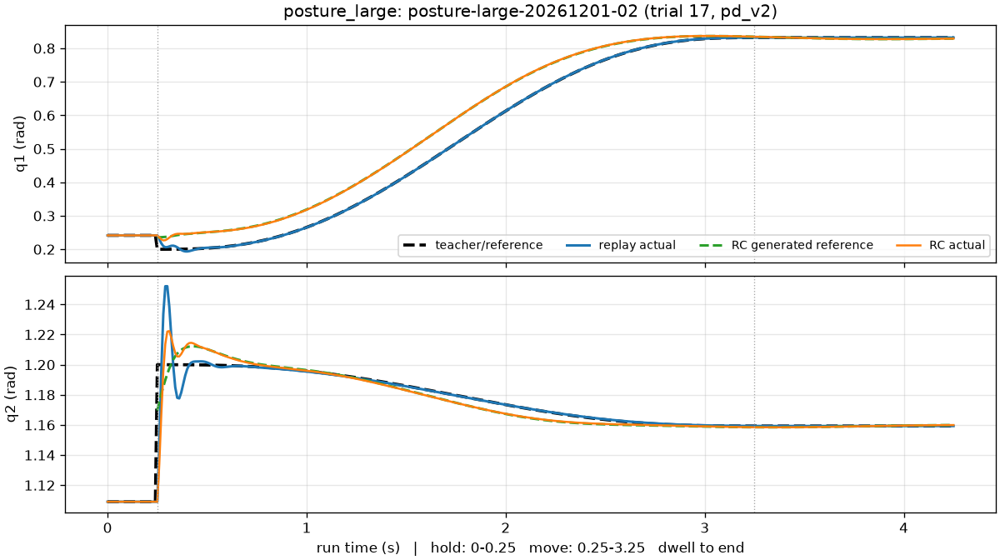
posture-large-20261201-02.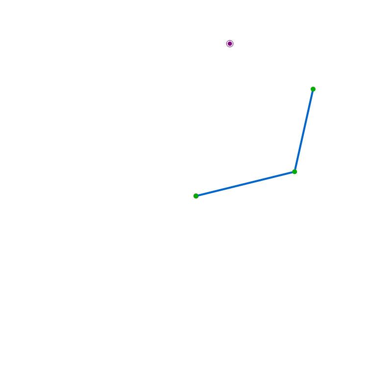
run-20260904-d9c6c77c5564run-20260904-866853da673dSmall posture offset · a successful example does not establish consistency
Initial joint offset: [−0.0442, +0.0233] rad, norm 0.05 rad; no force. The generated reference settles within the 0.05 rad band at 0.01 s and spends 100% of dwell inside the target region. Actual-motion RMSE is 0.01623 / 0.004087 rad (RC / replay). This run completes, but across all 20 small offsets, trial 17 improves both early metrics in only 11 cases under each tracker.
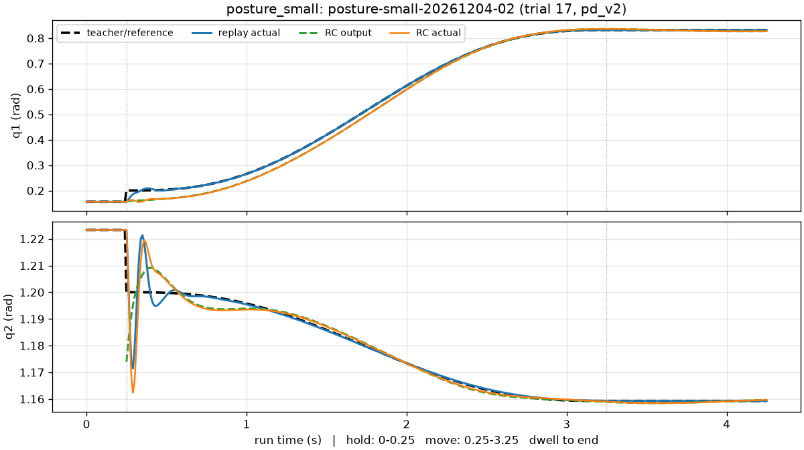
posture-small-20261204-02. The 0.05 rad settling band is
relatively permissive for a 0.05 rad initial offset; a near-zero settling time does not mean exact recovery.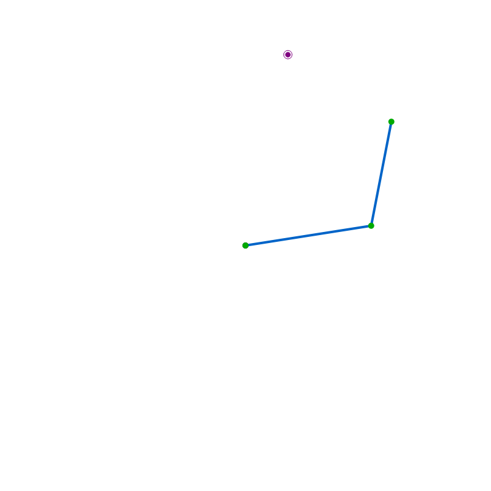
run-20260904-449a5c19f80arun-20260904-c8c77a5bc624Nominal start · replay remains the more precise reference follower
No posture offset or force is applied. Actual-motion RMSE is 0.01145 rad for RC and 0.000254 rad for replay. The RC reference is already within the 0.05 rad band at activation and spends 100% of dwell inside the target region. A visually similar reach can still have a substantial difference in tracking accuracy.
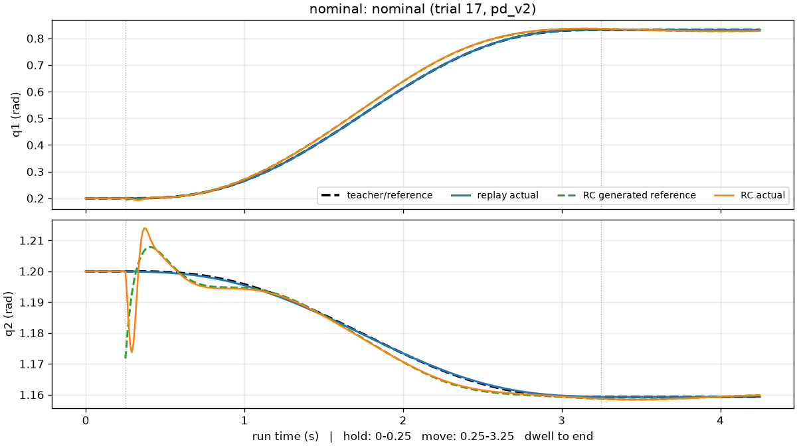
nominal. The RC activation jump is 0.02875 rad even with
no initial posture error.run-20260904-27f7ccb98e4f
run-20260904-9c32cf3d8fbaExternal force · the early-command score does not measure pulse recovery
A 12 N pulse acts toward +x at task time 1–1.2 s (run time 1.25–1.45 s). Under PD, actual-motion RMSE is 0.02766 / 0.02413 rad (RC / replay); both complete. The first-0.5-second metric ends before the pulse, so it cannot support a claim about recovery from this disturbance.
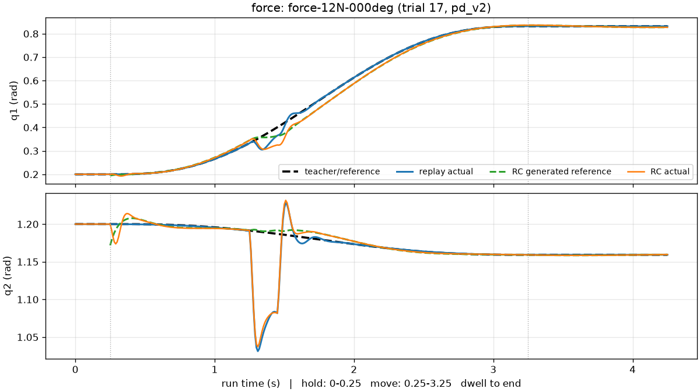
force-12N-000deg. The generated reference spends 100% of
dwell in the target region. Under computed torque, the corresponding actual-motion RMSEs
are 0.151 / 0.1417 rad, showing a much larger force response shared by both reference methods.run-20260904-14646a0ce72erun-20260904-34dd8feced9eAll 16 representative runs (four scenarios × two reference methods × two trackers) completed. The eight RC runs had zero torque saturation; force-case acceleration and jerk were markedly larger than in nominal motion. These observations concern the curated pairs only. Computed-torque metrics, restoring-alignment diagnostics, effort, and smoothness appear in the full report; identities and recovery metrics are in the representative record. The plotted settling times concern the generated reference’s joint-space distance from the demonstration, not endpoint settling time.
What this negative result tells us
The fairer timing comparison is useful in its own right
The revised protocol removes replay’s earlier correction opportunity and makes activation and feedback semantics explicit. The timing-only arm demonstrates that feasible closed-loop reaching is still possible under those conditions. It does not meet the stronger requirement for a consistent recovery benefit, even though some paired medians improve substantially.
A narrowing training tube did not produce a qualified feedback behavior
The synthetic trajectories converge by construction, but no feasible augmented model emerged in either 500-trial absolute-output study. The distinction matters: a valid collection of training paths does not guarantee that a learned next-position predictor will remain stable when driven by its own robot’s feedback.
A plausible explanation is a mismatch between predicting the next sample along an augmented path and learning a restoring response to arbitrary deviations. That is an interpretation, not a cause isolated by this experiment. The observed dwell and velocity failures identify symptoms; they do not distinguish effects of training coverage, readout fit, derivative filtering, and closed-loop dynamics.
“No model found” has a specific scope
The search was sampled, not exhaustive. Contractive augmentation visited 100 of 108 discrete augmentation combinations and 284 of 540 combinations including warm-up; non-decaying augmentation visited 93 of 108 and 244 of 540. Continuous ESN parameters also varied. Every infeasible trial received the same penalty, so the sampler could not rank partial progress within an infeasible region. These results do not prove that no suitable augmented model exists.
There are other limits to the inference. Augmentation changes both trajectory variation and training-set size (17–65 episodes versus one), so those effects are confounded. Stopping at the first failing evaluation censors later failures. One scripted demonstration supplies no independent evidence of a broad attraction region or of performance on human demonstrations. All results are developmental, in a two-joint, gravity-free simulation; neither hardware robustness nor online weight adaptation was tested.
The appropriate next step is a new hypothesis, with a new protocol. The task 1-b draft proposes several demonstrations reaching the same target from different initial postures, then testing unseen postures against replay-nearest and model-based baselines. This could test independent state coverage more directly. It remains a proposal awaiting protocol lock. Graded feasibility objectives or revised augmentation would also require future protocol work; v1’s thresholds remain as approved.
Freeze decision · Coverage and limitations · Task ledger: M3R closed; M4-001 in progress.
A readable view of the recorded evidence
This HTML is an editorial companion to the existing reports. It uses their committed plots
and animations unchanged; no new experimental results or visual-generation scripts were needed.
It opens directly from disk without a server, internet access, or the external data store.
Keep it beside the plots/ and animations/ folders when copying it.
| Evidence | What it supports |
|---|---|
| Approved protocol | Hypotheses, timing, augmentation, fairness, and eligibility thresholds |
| Detailed results | Metrics, failures, representative runs, and visual interpretation |
| Development evidence JSON | All 134 candidates’ four eligibility cells and the three primary study summaries |
| Freeze record JSON | Zero eligible models and the closed confirmatory gate |
| Representative record JSON | Trial 17 recipe, selection rule, run identities, and recovery metrics |
| Signed reproduction audit v3 | Ten steps passed; zero metric deviation; 16 run arrays identical; seven plots and eight GIFs reproduced byte-for-byte |
Dataset processed-20260903-ce343c8ce6a5 · freeze evidence commit
0e15b6270deb. Machine-readable records retain code/submodule revisions, resolved
configurations, hashes, seeds, environment, and worktree state. The independent audit reran on
the same host; it is not a cross-machine replication. That audit predates this overview and the
three augmentation-strategy figures; their later reproduction checks are recorded under TOOL-002.
Reproduce the existing plots and animations
Run from the repository root after the documented environment and external-store setup. The commands below regenerate scientific assets from their sources; merely viewing this page needs none of that setup. Use fresh output locations.
All seven recovery result plots, plus a fresh detailed Markdown report:
uv run python -m arm_rc_ctrl.experiments.recovery_report \
--docs docs/experiments/task_1a_state_conditioned_recovery \
--output /tmp/recovery-report.md \
--plots-dir /tmp/recovery-result-plotsThe three augmentation-strategy plots:
uv run python scripts/plot_recovery_augmentation.py \
--output-dir /tmp/recovery-augmentation-plotsFor any animation, substitute its caption’s run ID. This example regenerates large-offset RC motion:
uv run python scripts/play_run.py \
--run run-20260904-d9c6c77c5564 \
--scenario configs/tasks/task_1a.toml \
--export /tmp/recovery-large-rc.gif --fps 12Full audited reproduction, from a clean checkout with matching evidence dependencies and the configured external store (see the audit for recorded revisions):
uv run python scripts/reproduce_recovery.pyThe full audit verifies the four stored studies and reproduces the representative
model and runs; it does not rerun the entire 2,000-trial search. This HTML is maintained as prose;
tests/regression/test_recovery_overview.py checks its central numbers against the
committed records and validates its local links and animation identities.